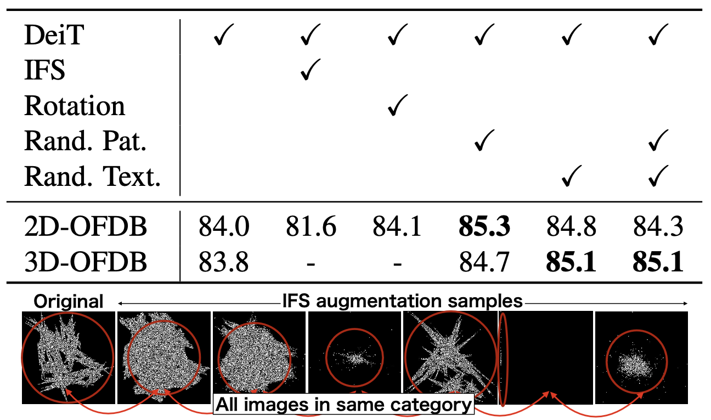
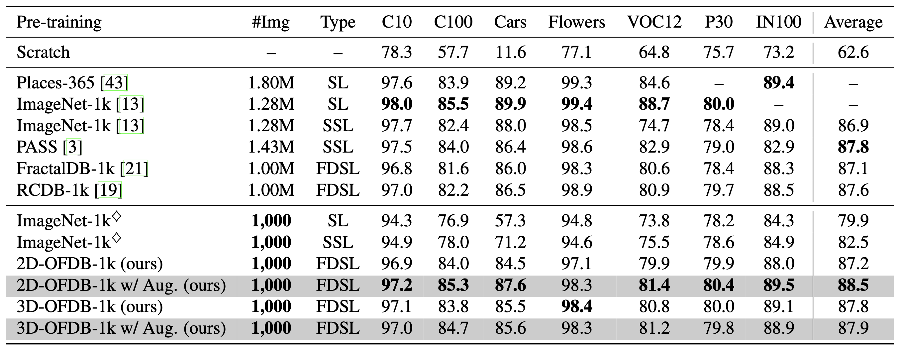
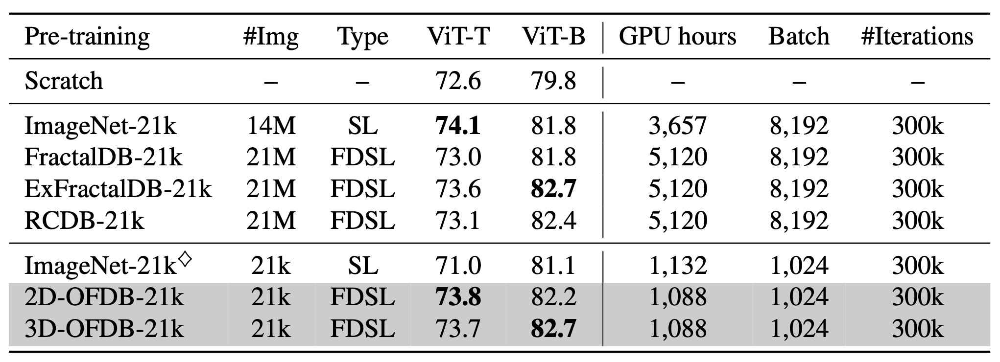
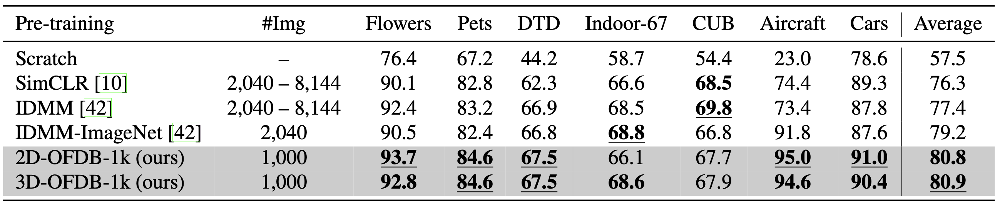

Formula-driven supervised learning (FDSL) is a pre-training method that relies on synthetic images generated from mathematical formulae such as fractals. Prior work on FDSL has shown that pre-training vision transformers on such synthetic datasets can yield competitive accuracy on a wide range of downstream tasks. These synthetic images are categorized according to the parameters in the mathematical formula that generate them. In the present work, we hypothesize that the process for generating different instances for the same category in FDSL, can be viewed as a form of data augmentation. We validate this hypothesis by replacing the instances with data augmentation, which means we only need a single image per category. Our experiments show that this one-instance fractal database (OFDB) performs better than the original dataset where instances were explicitly generated. We further scale up OFDB to 21,000 categories and show that it matches, or even surpasses, the model pre-trained on ImageNet-21k in ImageNet-1k fine-tuning. The number of images in OFDB is 21k, whereas ImageNet-21k has 14M. This opens new possibilities for pre-training vision transformers with much smaller datasets.
Why fractal pre-training with one-instance per category can train visual representation?
We consider instance augmentation of FractalDB. In FractalDB, the number of images is increased by (i) image rotation (x4), (ii) IFS parameters fluctuation (x25), and (iii) patch patterns (x10) from a representative image of the category found with category search. FractalDB is pre-trained as a dataset of 1,000 instances of pre-processed images, but in a simple view, these could be replaced by data augmentation. Details will be discussed later, and Table 6 shows that the accuracy is almost the same with and without Rotation (2D-OFDB w/o rotation 84.0 vs. w/ rotation 84.1 on CIFAR-100). On the other hand, the performance rates with IFS fluctuation are significantly lower (2D-OFDB w/o IFS 84.0 vs. w/ IFS 81.6 on CIFAR-100). From these observations, we believe that a pre-training dataset with fewer instances like a dataset consists of one-instance per category and using basic data augmentation are the key technologies to reduce training time to an equivalent or better accuracy level. As the result, an image augmentation with patch patterns were newly implemented as random patch/texture augmentation so that they could be implemented within data augmentation, and it became clear that accuracy could be improved while reducing the data size to 0.1% amount.

Table 1: Effects of data augmentation for fractal images. Data-efficient image Transformer (DeiT) augmentation set- ting is used as a default.
Experimental Results
Fine-tuning results(Table 2)
We conducted finetuning experiments on the CIFAR-10 (C10), CIFAR-100 (C100), Cars, Flowers, ImageNet-100 (IN100), Places30 (P30), and Pascal VOC 2012 (VOC12) datasets. The proposed OFDBs are compared with six pre-training datasets: ImageNet-1k , Places-365 , PASS , FractalDB-1k , RCDB-1k , and ExFractalDB-1k . The results using a subset of ImageNet, which consists of 1,000 images obtained by randomly sampling one image per category, are also reported. Note that ◊ indicates the subset. This subset is the same size as OFDBs. Here, we assign the ViT-Tiny (ViT-T) model with standard DeiT training configurations, including hyperparameters.
we see that OFDBs achieved a higher accuracy with million-scale FDSL datasets, such as ExFractalDB-1k. Although they did not always surpass SL and SSL methods, note that they often achieved similar performance rates with only 1,000 images for pre-training, which is approximately 0.078% of images as compared to ImageNet-1k (1.28M images). We also see a significant difference between OFDBs and the ImageNet-1k ◊ subset in terms of average accuracy. In the proposed methods, the configuration of 2D-OFDB-1k with random pattern augmentation has a better average rate in the table. Thereafter, in the experiments, we assigned random pattern augmentation for 2D-OFDB.
Table 2: Comparison of pre-training methods. Best values at each dataset scale are in bold. ◊ indicates a subset that consists of one randomly sampled image per class. ViT-T is used for all experiments. SL: supervised learning using crossentropy loss, SSL: self-supervised learning using DINO. Fine-tuning accuracies are reported..

Scaling experiments on ImageNet-1k (Table 3). In order to investigate the scalability of OFDBs, we increased the number of categories from 1,000 to 21,000 and applied these categories to ViT-T and ViT-Base (ViT-B) in Table 2. For comparison, the results of ImageNet-21k, FractalDB-21k, ExFractalDB-21k, and RCDB-21k are reported. ImageNet-21k consists of 14M images, and the other three FDSL datasets consist of 21M images. The results for the ImageNet-21k ◊ subset involving one image per category are also reported.
With ViT-T, 2D-OFDB-21k outperforms FractalDB-21k (73.8 vs. 73.0) and is comparable with ExFractalDB- 21k (73.7 vs. 73.6). However, we see the performance gap between 2D-OFDB-21k and ImageNet-21k (73.8 vs. 74.1). This is because the images of ImageNet-21k for pre-training and the images of ImageNet-1k for fine-tuning overlap. This gap is reversed in ViT-B, where 2D-OFDB- 21k is recorded 0.4 points higher than ImageNet-21k on ImageNet-1k fine-tuning. Moreover, the 3D-OFDB-21k pre-trained model was recorded 0.9 point higher than the model pre-trained on ImageNet-21k. Note that the computational time for pre-training in terms of GPU hours is reduced by 78.7% (1,088 vs. 5,120 in terms of GPU hours). We clarified that ViT pre-training can be more efficient in terms of both data amount and computational time.
Table 3: Scaled models/datasets with combinations of 21k categories and ViT-T/B models are used in ImageNet-1k fine-tuning. We also list GPU hours, batch size (‘Batch’), and number of iterations (‘#Iterations’) in ViT-B pre-training.

Pre-training with limited data (Table 4).
Instance Discrimination with Multi-crop and CutMix (IDMM), proposed by Cao et al., which requires only 2,040 images for pre-training, is one of the most successful approaches for training ViTs on small datasets. In Table 4, we compare OFDBs with IDMM. Here, we used the fine-tuning configuration of IDMM for a fair comparison, i.e., 800-epoch pre-training and 200-epoch fine-tuning on seven datasets of Flowers, Pets, DTD, Indoor-67, CUB, Aircraft, and Cars. Note that IDMM has two settings: internal pre-training and external pre-training. We used PVT v2 for the ViT model, as in Cao et al. The former uses the same dataset for pre-training and fine-tuning. This performs well, as reported in IDMM. For the latter, we used an ImageNet subset, which consists of 2,040 randomly sampled images (with two or three images per category). We refer to this as IDMM-ImageNet.
The results are shown in Table 4. Although we used a limited number of images to pre-train a ViT, the re- sult is much higher than the accuracy of training from scratch using the same procedure of 200-epoch fine-tuning. The proposed method is also better than the other well- organized pre-training methods, including IDMM and SimCLR, with fewer pre-training images. In comparison with IDMM-ImageNet, 2D-OFDB-1k pre-training still performs at a higher accuracy, indicating that 2D-OFDB-1k pre-training is highly beneficial, even when using a limited number of synthesized images.
Table 4: Pre-training with small datasets. The pre-training and fine-tuning setting in is used for evaluation. Note that the values ‘2,040 – 8,144’ correspond to the number of pre-training images at each dataset. Best and second-best scores are in underlined bold and bold, respectively.

Citation
@inproceedings{Nakamura_2023_ICCV,
author = {Nakamura, Ryo and Kataoka, Hirokatsu and Takashima, Sora and Noriega, Edgar Josafat Martinez and Yokota, Rio and Inoue, Nakamasa},
title = {Pre-training Vision Transformers with Very Limited Synthesized Images},
booktitle = {Proceedings of the IEEE/CVF International Conference on Computer Vision (ICCV)},
month = {October},
year = {2023}
pages = {20360-20369}
}
This work is based on results obtained from a project, JPNP20006, commissioned by the New Energy and Industrial Technology Development Organization (NEDO).
This work was supported by JSPS KAKENHI Grant Number JP19H01134.
Computational resource of AI Bridging Cloud Infrastructure (ABCI) provided by National Institute of Advanced Industrial Science and Technology (AIST) was used.